Appendix D — ggplot extras
D.1 Fonts
You can customise the fonts used in themes. All computers should be able to recognise the families “sans”, “serif”, and “mono”, and some computers will be able to access other installed fonts by name.
The easiest way to add lots of custom fonts is with showtext.
The second argument, family, is optional. It gives the family name of the font that will be used in R. In other words, it means that the name used to refer to the font in R does not need to be the same than the original name of the font. In this case, the font Special Elite is going to be the special family.
showtext_auto() must be called to indicate that showtext is going to be automatically invoked to draw text whenever a plot is created.
D.2 Custom themes
It is often the case that we start to default to a particular ‘style’ for our figures, or you may be making several similar figures within a research paper. Creating custom functions can extend to making our own custom ggplot themes. You have probably already used theme variants such as theme_bw(), theme_void(), theme_minimal() - these are incredibly useful, but you might find you still wish to make consistent changes.
plot <- penguins |>
drop_na(sex) |>
ggplot(aes(x = species, y = culmen_length_mm, fill = species)) +
geom_violin(width = .5,
alpha = .4)+
geom_boxplot(width = .2)+
scale_fill_brewer(palette = "Dark2")
plot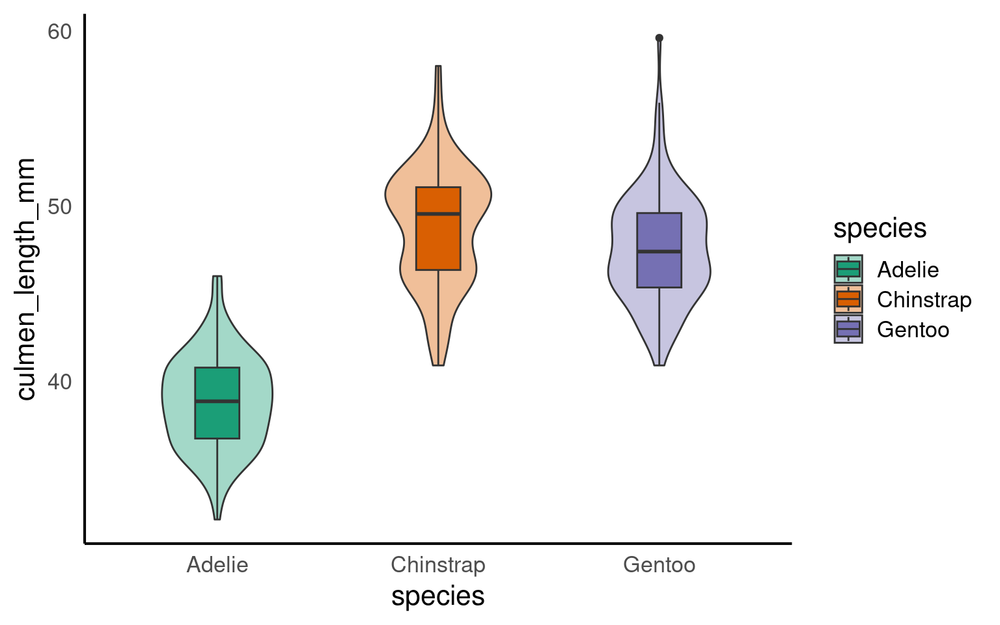
With the addition of a title and theme_classic() we can improve the style quickly
But I still want to make some more changes, rather than do this work for one figure, and potentially have to repeat this several times for subsequent figures, I can decide to make a new function instead. See here for a full breakdown of the arguments for the theme() function.
Note when using a pre-set theme, and then modifying it further, it is important to get the order of syntax correct e.g
theme_classic + theme() # is correct
theme() + theme_classic() # will not work as intended
# custom theme sets defaults for font and size, but these can be changed without changing the function
theme_custom <- function(base_size=12, base_family="serif"){
theme_classic(base_size = base_size,
base_family = base_family,
) %+replace%
# update theme minimal
theme(
# specify default settings for plot titles - use rel to set titles relative to base size
plot.title=element_text(size=rel(1.5),
face="bold",
family=base_family),
#specify defaults for axis titles
axis.title=element_text(
size=rel(1),
family=base_family),
# specify position for y axis title
axis.title.y=element_text(angle = 90,
margin = margin(r = 10, l= 10)),
# specify position for x axis title
axis.title.x = element_text(margin = margin(t = 10, b = 10)),
# set major y grid lines
panel.grid.major.y = element_line(colour="gray", size=0.5),
# add axis lines
axis.line=element_line(),
# Adding a 0.5cm margin around the plot
plot.margin = unit(c(0.2, 0.5, 0.5, 0.5), units = , "cm"),
# Setting the position for the legend
legend.position = "none"
)
}With this function set, I can now use it for as many figures as I wish. To use it in the future I should probably save it in a unique script, with a clear title and comments for future use.
I could then easily use source("custom_theme_function.R") to make this available to any scripts I was using.
D.3 Saving
One of the easiest ways to save a figure you have made is with the ggsave() function. By default it will save the last plot you made on the screen.
You should specify the output path to your figures folder, then provide a file name. Here I have decided to call my plot plot (imaginative!) and I want to save it as a .PNG image file. I can also specify the resolution (dpi 300 is good enough for most computer screens).
If you got this far and still have time why not try one of the following:
-
Making another type of figure using the penguins dataset, use the further reading below to use for inspiration.
-
Use any of your own data
D.3.1 What we learned
You have learned
The anatomy of ggplots
How to add geoms on different layers
How to use colour, colour palettes, facets, labels and themes
Putting together multiple figures
How to save and export images
D.4 Further Reading, Guides and tips on data visualisation
Fundamentals of Data Visualization: this book tells you everything you need to know about presenting your figures for accessbility and clarity
Beautiful Plotting in R: an incredibly handy ggplot guide for how to build and improve your figures
The ggplot2 book: the original Hadley Wickham book on ggplot2
E Extensions for ggplot2
This tutorial has but scratched the surface of the visualisation options available using R. Here I have provided some further advanced plots and customisation options for those who are feeling confident with the content covered in this tutorial. However, the below plots give an idea of what is possible.
Check out https://exts.ggplot2.tidyverse.org/ for the full list of approved extensions for ggplot
E.1 ggdist
E.1.1 Rainclouds
Raincloud plots combine a density plot, boxplot, raw data points, and any desired summary statistics for a complete visualisation of the data. They are so called because the density plot plus raw data is reminiscent of a rain cloud.
library(ggdist)
pal <- c(
"Adelie" = "#FF8C00",
"Chinstrap" = "#A034F0",
"Gentoo" = "#159090")
penguins |>
ggplot(aes(x = species,
y = culmen_length_mm,
fill = species)) +
ggdist::stat_halfeye(
point_colour = NA,
.width = 0,
# shift raincloud up
justification = -.2)+
geom_boxplot(# remove outlier dots
outlier.shape = NA,
# shrink width of box
alpha = .4,
# fade box
width = .1)+
ggdist::stat_dots(aes(colour = species),
# put dots underneath
side = "left",
# move position down
justification = 1.1,
# size of dots
dotsize = .2,
# adjust bins (grouping) of dots
binwidth = .4)+
scale_fill_manual(values = pal) +
scale_colour_manual(values = pal)+
guides(fill = "none")+
coord_flip() # rotate figure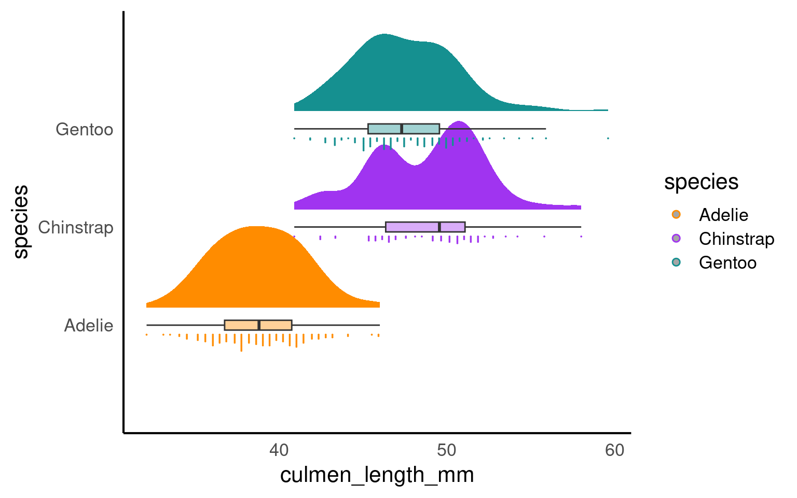
E.1.2 Interval plots
An interval plot is a type of data visualization that is used to display intervals or ranges associated with data points. It is particularly useful for visualizing uncertainty or variability in the data. Interval plots can be used to represent various types of intervals, such as confidence intervals, prediction intervals, or any other kind of range or interval associated with the data.
penguins |>
drop_na(sex) |>
ggplot(aes(x = species,
y = culmen_length_mm))+
ggdist::stat_interval(.width = c(.5, .66, .95))+
ggdist::stat_halfeye(aes(fill = sex),
.width = 0,
shape = 21,
colour = "white",
slab_alpha = .4,
size = .5,
position = position_nudge(x = .05))+
scale_color_viridis_d(option = "mako", direction = -1, end = .9)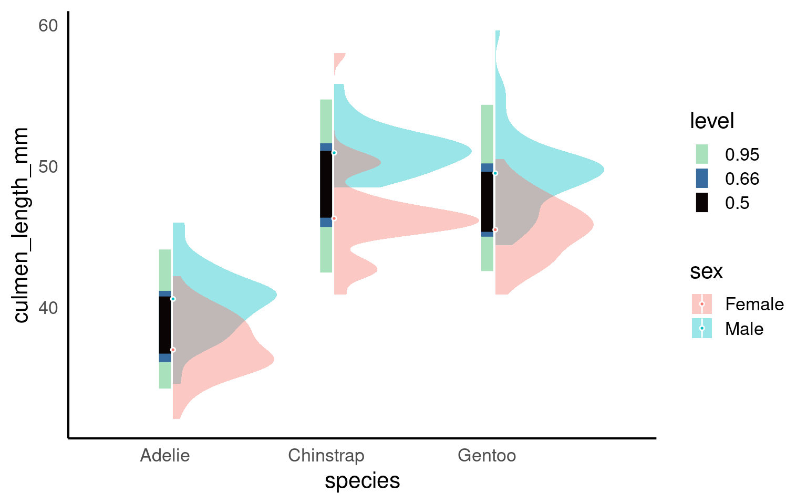
E.2 Density
A density plot is a data visualization technique used to represent the distribution of a continuous numeric variable. It provides a smoothed estimate of the probability density function (PDF) of the data, showing where values are concentrated and where they are sparse. Density plots are particularly useful for visualizing the shape, central tendency, and spread of data.
E.3 ggridges
A ridge plot is a data visualization technique that is similar to a density plot but is designed for displaying multiple probability density distributions side by side, allowing for easier comparison between different groups or categories. Ridge plots are particularly useful when you want to visualize and compare the distribution of multiple continuous variables or data sets simultaneously.

E.4 Bump charts
A bump chart, also known as a line chart or path chart, is a data visualization technique used to show the ranking and changes in ranking of entities (such as teams, players, or products) over time or across different categories. Bump charts are especially useful for visualizing the rise and fall of ranked items, making it easy to identify trends and compare changes in relative position.
library(ggbump)
penguin_summary <- penguins |>
mutate(date_egg = dmy(date_egg)) |>
filter(clutch_completion == "Yes") |>
mutate(year = year(date_egg)) |>
group_by(species, year) |>
summarise(n = n())
penguin_summary |>
ggplot(aes(x = year,
y = n,
colour = species))+
geom_point(size = 7)+
geom_bump()+
geom_text(data = penguin_summary |> filter(year == max(year)),
aes(x = year + 0.1,
label = species,
hjust = 0),
size = 5)+
scale_x_continuous(limits = c(2007, 2009.5),
breaks = (2007:2009))+
labs(y = "Total number of complete clutches")+
scale_fill_manual(values = pal) +
scale_colour_manual(values = pal)+
theme(legend.position = "none")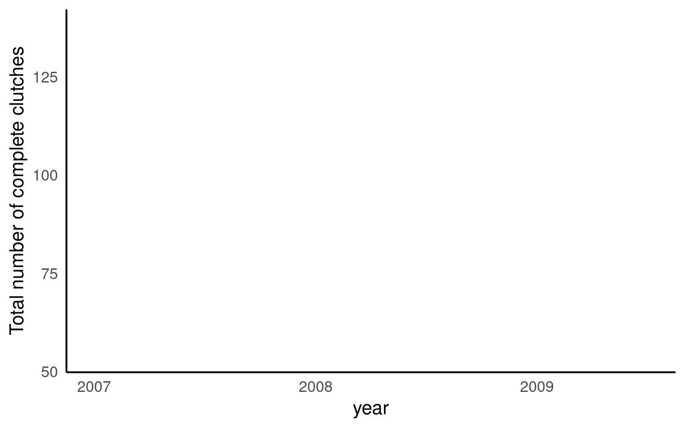
E.5 Dumbell charts
A dumbbell chart is a data visualization technique that is used to compare two data points for multiple categories or entities. It is called a “dumbbell” chart because it often resembles a pair of dumbbells, with circles or dots representing the data points at the ends of a line connecting them. Dumbbell charts are useful for comparing before-and-after values, two different groups, or any two related data points for different categories or entities.
library(ggalt)
summary_counts <- penguins |>
group_by(sex, species) |>
drop_na() |>
summarise(mean = mean(body_mass_g, na.rm = T)) |>
pivot_wider(names_from = sex, values_from = mean)
ggplot(summary_counts,
aes(y=species, x=Female, xend=Male)) +
geom_dumbbell(size=3, color="#e3e2e1",
colour_x = "#5b8124", colour_xend = "#bad744") +
geom_text( x=summary_counts[[3,2]], y=3, aes(label="Female"),
color="#9fb059", size=3, vjust=-2, fontface="bold")+
geom_text(x=summary_counts[[3,3]], y=3, aes(label="Male"),
color="#bad744", size=3, vjust=-2, fontface="bold")+
labs(x = "Body mass (g)",
y = "")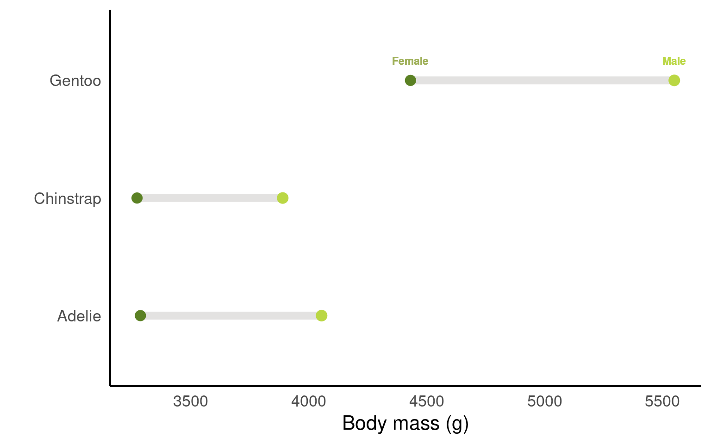
E.6 Heat maps
Here’s an example of simulated biological data for a heatmap in R. This dataset represents monthly measurements of water quality in different lake locations, where measurements could include factors like pH, dissolved oxygen, or nutrient concentration. Each lake is sampled monthly over a year, giving us a grid of data points that can be visualized in a heatmap.
A popular package for this sort of data is the viridis package. The viridis package is popular for creating color scales in data visualizations because it offers color palettes that are perceptually uniform, accessible, and still work when printed grayscale.
library(viridis)
# Set seed for reproducibility
set.seed(123)
# Simulate data
data <- expand.grid(
lake = paste("Lake", 1:5), # 5 different lake locations
month = factor(1:12, labels = month.abb) # 12 months (Jan, Feb, ... Dec)
)
# Add simulated measurements for water quality
data$ph <- round(rnorm(nrow(data), mean = 7, sd = 0.5), 2) # pH levels around neutral, with some variability
data$dissolved_oxygen <- round(rnorm(nrow(data), mean = 8, sd = 1), 1) # Dissolved oxygen levels in mg/L
data$nutrients <- round(runif(nrow(data), min = 0, max = 1), 2) # Nutrient concentration, scaled from 0 to 1
# View a sample of the data
head(data)
# Heatmap for pH levels by lake and month
ggplot(data, aes(x = month, y = lake, fill = ph)) +
geom_tile(color = "white", linewidth =.7) +
scale_fill_viridis(name = "pH Level") +
labs(title = "Monthly pH Levels by Lake", x = "Month", y = "Lake") +
theme_minimal()
| lake | month | ph | dissolved_oxygen | nutrients |
|---|---|---|---|---|
| Lake 1 | Jan | 6.72 | 8.4 | 0.55 |
| Lake 2 | Jan | 6.88 | 7.5 | 0.66 |
| Lake 3 | Jan | 7.78 | 7.7 | 0.17 |
| Lake 4 | Jan | 7.04 | 7.0 | 0.63 |
| Lake 5 | Jan | 7.06 | 6.9 | 0.31 |
| Lake 1 | Feb | 7.86 | 8.3 | 0.72 |
E.7 Hexbins
Hexbin plots are excellent for visualizing dense data without overplotting, as they use color intensity to represent areas with many overlapping points, revealing patterns and clusters effectively.
# Load necessary packages
# Set seed for reproducibility
set.seed(123)
# Simulate data
data <- data.frame(
body_size = rnorm(1000, mean = 50, sd = 15), # Simulated body size in cm
metabolic_rate = rnorm(1000, mean = 200, sd = 50) # Simulated metabolic rate in arbitrary units
)
# Create hexbin plot
ggplot(data, aes(x = body_size, y = metabolic_rate)) +
geom_hex() +
scale_fill_viridis_c(name = "Density") +
labs(
title = "Hexbin Plot of Body Size vs. Metabolic Rate",
x = "Body Size (cm)",
y = "Metabolic Rate"
) 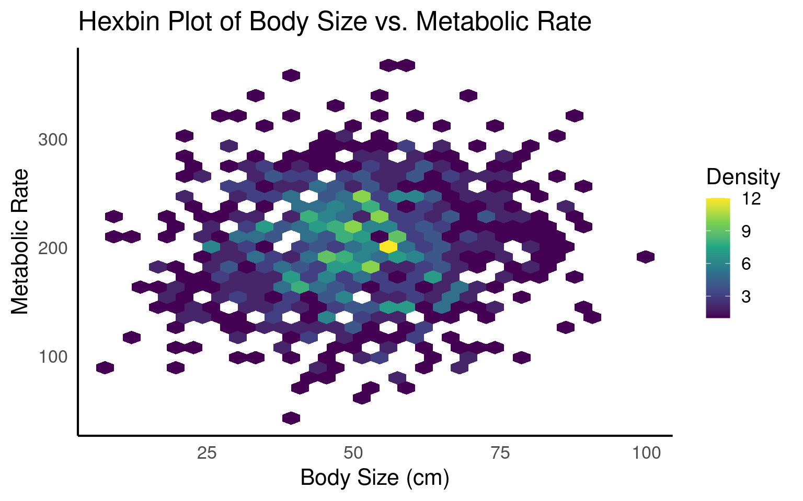
E.8 Facets
The facet_nested() function in the ggh4x package is used for creating nested or hierarchical faceting in ggplot2 plots. Faceting is the process of breaking down a data visualization into multiple subplots or panels based on one or more categorical variables, allowing you to see how the data behaves within different categories. Nested faceting allows you to further subdivide these panels into smaller panels, creating a hierarchy of facets.
library(ggh4x)
penguins |>
mutate(Nester = ifelse(species=="Gentoo", "Crustaceans", "Fish & Krill")) |>
ggplot(aes(x = culmen_length_mm,
y = culmen_depth_mm,
colour = species))+
geom_point()+
facet_nested(~ Nester + species)+
scale_colour_manual(values = pal)+
theme(legend.position = "none")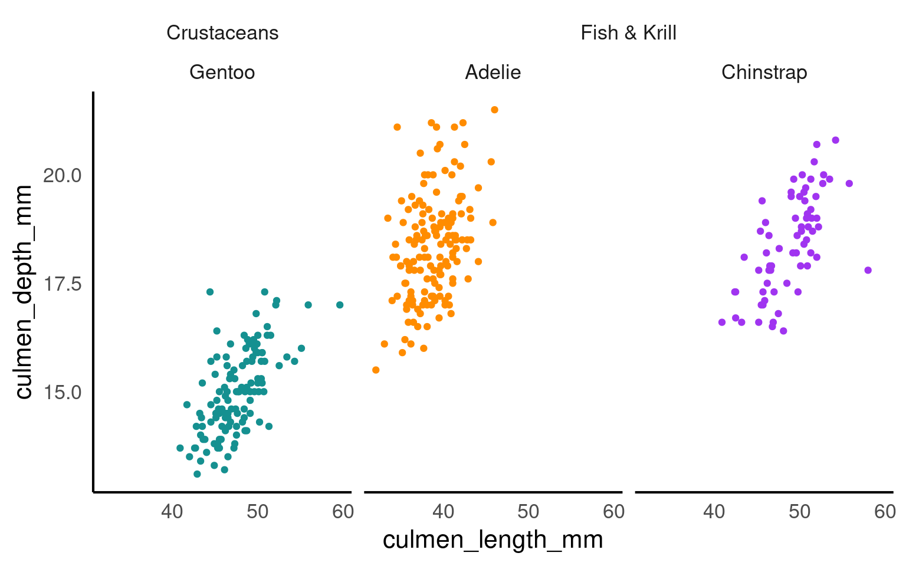
E.9 Highlighting
Using plot highlighting, such as the gghighlight package in R, can be beneficial in data visualization for several reasons:
Emphasizing Key Information: Plot highlighting allows you to draw attention to specific data points or groups of interest. This can be helpful when you want to highlight outliers, key observations, or certain categories that are important in your data.
Enhanced Interpretation: Highlighting specific elements in a plot can make it easier for viewers to interpret and understand the data. By reducing visual clutter and emphasizing relevant information, you can improve the effectiveness of your data visualization.
Storytelling: Plot highlighting is a useful tool for storytelling in data visualization. You can use it to guide the viewer’s attention and convey the main message or story behind the data.
Comparative Analysis: Highlighting allows you to compare specific data points or groups more easily. For example, you can highlight one group against others to demonstrate differences or trends.

E.10 Text
Annotating a chart with text is a common and valuable practice in data visualization for several important reasons:
Provide Context: Text annotations help to provide context and background information for the data. They explain what the chart represents, the variables involved, and the meaning of various data points or patterns. This context is crucial for viewers who may not be familiar with the data or the chart.
Highlight Key Points: Text annotations can be used to emphasize and draw attention to important findings or insights in the data. You can use annotations to highlight specific data points, trends, outliers, or other notable features in the chart.
Label Data: Annotating a chart with labels helps to identify individual data points, data series, or categories. This is especially useful in scatterplots, bar charts, and other types of visualizations where labeling individual elements is important.
Clarify Relationships: Annotations can be used to clarify relationships between data points or groups. For example, you can add arrows and labels to indicate which data points are related or what causes certain patterns.
Provide Sources and Citations: In cases where the data comes from external sources or studies, annotations can be used to provide proper attribution and citations to give credit to the data sources.
Explain Methodology: Annotations can also explain the methodology or statistical techniques used to generate the chart, which is important for transparency and trust in data analysis.
Below I provide some packages that help with text annotation:
E.10.1 ggforce
penguins |>
ggplot(
aes(x = culmen_length_mm,
y= body_mass_g,
colour = species)) +
geom_point(aes(fill = species), shape = 21, colour = "white") +
geom_smooth(method = "lm", se = FALSE,linetype = "dashed", alpha = .4)+
ggforce::geom_mark_ellipse(aes(
label = species,
filter = species == 'Adelie'),
con.colour = "#526A83",
con.cap = 0,
con.arrow = arrow(ends = "last",
length = unit(0.5, "cm")),
show.legend = FALSE) +
gghighlight(species == "Adelie")+
scale_colour_manual(values = pal)+
scale_fill_manual(values = pal)
E.10.2 textpaths
E.10.3 ggtext
library(ggtext)
penguins |>
mutate(species = fct_relevel(species, "Chinstrap", "Gentoo", "Adelie")) |>
group_by(species) |>
summarise(n=n()) |>
ggplot(aes(x = species,
y = n,
fill = species))+
geom_col()+
geom_label(aes(label = n),
fill = "white",
nudge_y = 1,
colour = "black",
fontface = "bold")+
labs(x = "",
y = "Count",
title = paste(
'There are almost half the observations on <br> <span style = "color:#A034F0">Chinstrap</span> penguins, as there are <br> on <span style = "color:#FF8C00">Adelie</span> and <span style ="color:#159090">Gentoo</span>penguins'
))+
scale_fill_manual(
# when reordering levels - be careful about keeping colours consistent!!! May need manually sorting
values = pal)+
coord_flip()+
scale_y_continuous(limits = c(0, 200))+
theme(legend.position = "none",
axis.text.y = element_text(
color = c( "#A034F0", "#159090", "#FF8C00")),
plot.title = element_markdown())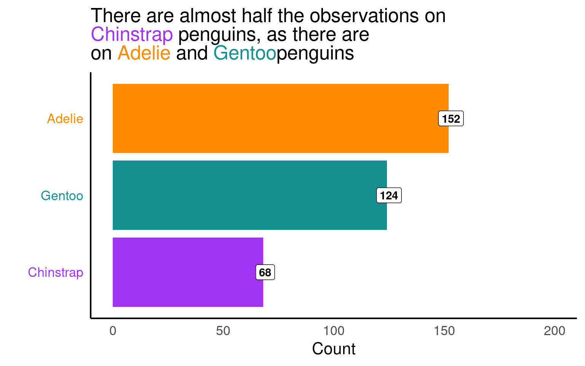
E.10.4 scales
The scalespackage provides much of the infrastructure that underlies ggplot2’s scales, and using it allow you to customize the transformations, breaks, and labels used by ggplot2. It is particularly good at providing sensible labels apply transformations such as a log scale.
library(scales)
library(ggridges)
penguins |>
ggplot(aes(x = culmen_length_mm,
y = species,
fill = species)) +
geom_density_ridges() + # use hjust and vjust to position text
scale_fill_manual(values = pal) +
scale_colour_manual(values = pal)+
theme(legend.position = "none") +
scale_x_continuous(labels = label_number(
scale_cut = cut_si("mm")))+
labs( x = "Bill length",
y = "Species")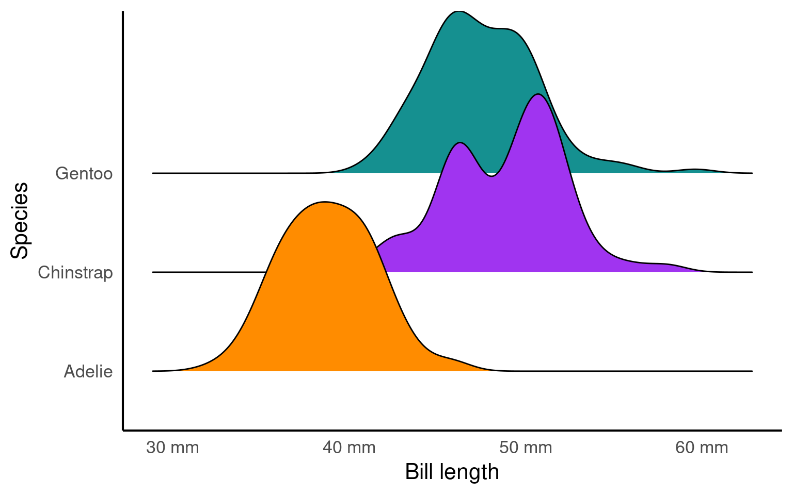
Here is a good example of the scales package in action.
The distribution of GDP per capita in the gapminder dataset is heavily skewed, with most countries reporting less than $10,000. As a result, the scatterplot makes an upside-down L shape. Try sticking a regression line on that and you’ll get in trouble.
library(gapminder)
gapminder |>
filter(year == 2007) |>
ggplot(aes(x = gdpPercap, y = lifeExp, color = continent)) +
geom_point() +
guides(color = "none") +
labs(title = "GDP per capita",
subtitle = "GDP per capita raw values")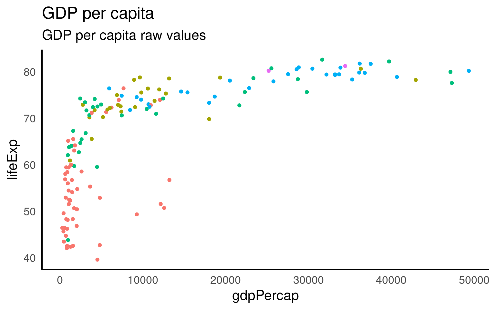
Fit this onto a log scale (R’s standard log function is the natural log). And we get a straighter line but some ugly axis labels.
gapminder |>
filter(year == 2007) |>
ggplot(aes(x = log(gdpPercap), y = lifeExp, color = continent)) +
geom_point() +
guides(color = "none") +
labs(title = "GDP per capita, natural log (base e)",
subtitle = "GDP per capita logged manually")
GGplot has a scale_x/y_log10 scale but this applues the wrong transformation to our data - in this particular example there is little difference in the range of values when using a log10 vs log transformation (as we will see in a moment).
gapminder |>
filter(year == 2007) |>
ggplot(aes(x = gdpPercap, y = lifeExp, color = continent)) +
geom_point() +
guides(color = "none") +
labs(title = "GDP per capita, log (base 10)",
subtitle = "GDP per capita logged with scale") +
scale_x_log10()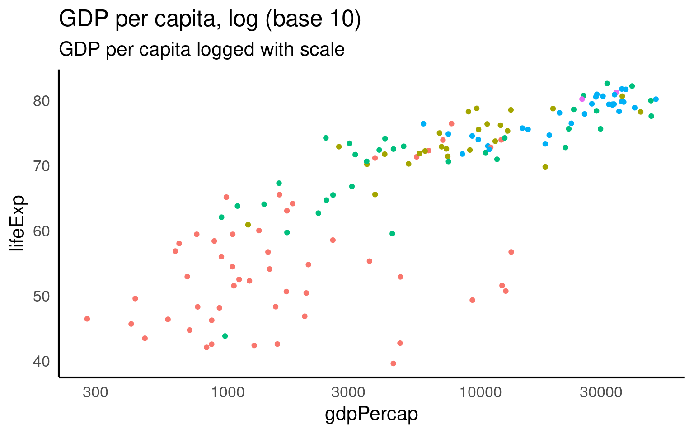
But we can set whatever custom transformation we wish
log_natural <- trans_new(
name = "logn",
transform = function(x) log(x),
inverse = function(x) exp(x),
breaks = log_breaks()
)
gapminder |>
filter(year == 2007) |>
ggplot(aes(x = gdpPercap, y = lifeExp, color = continent)) +
geom_point() +
guides(color = "none") +
labs(title = "GDP per capita, natural log (base e)",
subtitle = "GDP per capita logged manually") +
scale_x_continuous(trans = log_natural,
labels = label_dollar(accuracy = 1))
E.11 Maps
Working with maps can be tricky. The sf package provides functions that work with ggplot2, such as geom_sf(). The rnaturalearth package provides high-quality mapping coordinates.
library(sf) # for mapping geoms
library(rnaturalearth) # for map data
# get and bind country data
uk_sf <- ne_states(country = "united kingdom", returnclass = "sf")
ireland_sf <- ne_states(country = "ireland", returnclass = "sf")
islands <- bind_rows(uk_sf, ireland_sf) %>%
filter(!is.na(geonunit))
# set colours
country_colours <- c("Scotland" = "#0962BA",
"Wales" = "#00AC48",
"England" = "#FF0000",
"Northern Ireland" = "#FFCD2C",
"Ireland" = "#F77613")
ggplot() +
geom_sf(data = islands,
mapping = aes(fill = geonunit),
colour = NA,
alpha = 0.75) +
coord_sf(crs = sf::st_crs(4326),
xlim = c(-10.7, 2.1),
ylim = c(49.7, 61)) +
scale_fill_manual(name = "Country",
values = country_colours)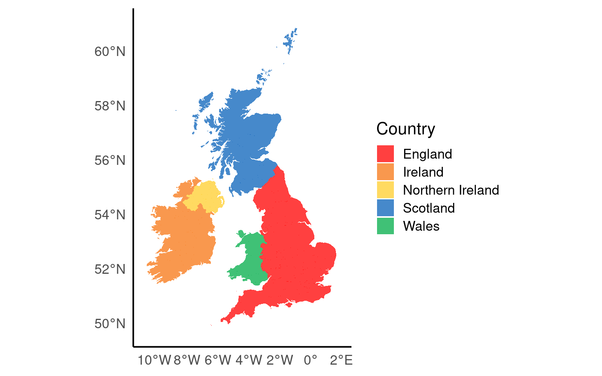
E.12 Layouts and compositions
Having control over layouts allow you to tailor the appearance of your plot to match your specific needs and preferences. You can control every aspect of the plot’s design, including the arrangement of facets, legends, titles, and labels. When you need to create complex composite plots that combine multiple geoms and facets, custom layouts enable you to precisely position and arrange them.
text <- tibble(
x = 0, y = 0, label = 'Simpsons Paradox is a statistical phenomenon where an association between two variables in a population emerges, disappears or reverses when the population is divided into subpopulations such as <span style = "color:#FF8C00">Adelie</span>, <span style ="color:#159090">Gentoo</span>, and <span style = "color:#A034F0">Chinstrap</span> penguin species'
)
pt <- ggplot(text, aes(x = x, y = y)) +
ggtext::geom_textbox(
aes(label = label), # Map the 'label' column from the 'text' data to the text labels
box.color = NA, # Make the text box border color transparent
width = unit(10, "lines"), # Set the width of the text boxes to 15 lines
color = "grey40", # Set the text color to a light gray
size = 3, # Set the text size to 4 (adjust as needed)
lineheight = 1.4 # Set the line height for text within the boxes
) +
# Customize the plot coordinate system
coord_cartesian(expand = FALSE, clip = "off") +
# Apply a theme with a blank (void) background
theme_void()
pt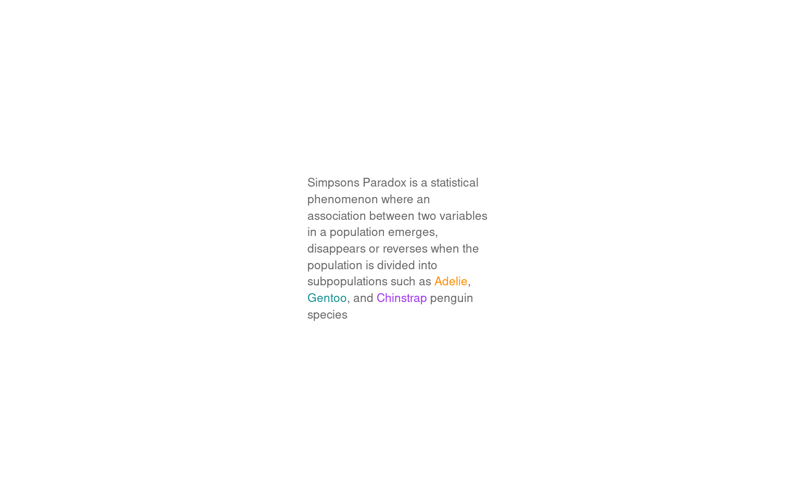
layout <- "
AACCC
AACCC
BBDDD
BBDDD
"
p1 <- ggplot(penguins, aes(x= culmen_length_mm,
y= culmen_depth_mm)) +
geom_point()+
geom_smooth(method="lm",
se=FALSE)+
theme(legend.position="none")+
labs(x="Bill length (mm)",
y="Bill depth (mm)")
p2 <- ggplot(penguins, aes(x= culmen_length_mm,
y= culmen_depth_mm,
colour=species)) +
geom_point()+
geom_smooth(method="lm",
se=FALSE)+
scale_colour_manual(values=pal)+
theme(legend.position="none")+
labs(x="Bill length (mm)",
y="Bill depth (mm)")
p1 + p2 +
pt + penguin_fig +
plot_layout(design = layout)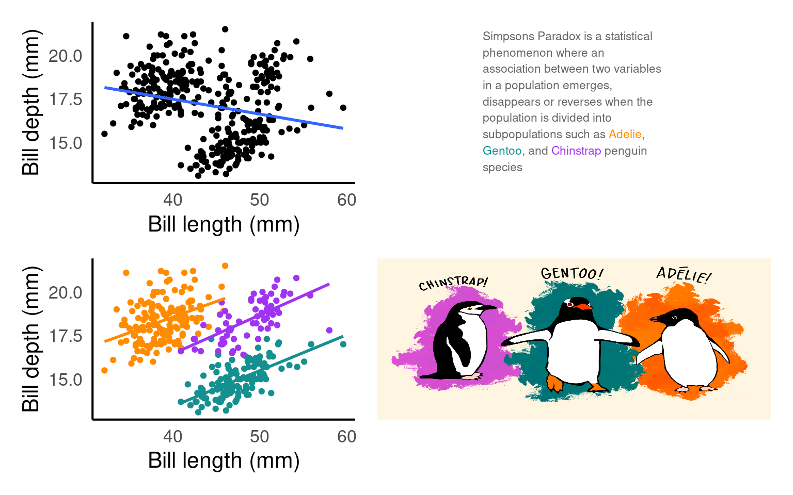